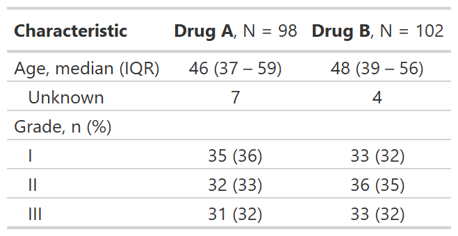

![[Experimental]](../help/figures/lifecycle-experimental.svg) The following themes are available to use within the gtsummary package.
Use the
The following themes are available to use within the gtsummary package.
Use the set_gtsummary_theme() function to set a theme.
| theme_gtsummary {gtsummary} | R Documentation |
The following themes are available to use within the gtsummary package.
Use the set_gtsummary_theme() function to set a theme.
theme_gtsummary_journal(journal = c("jama", "lancet"), set_theme = TRUE)
theme_gtsummary_compact(set_theme = TRUE)
theme_gtsummary_printer(
print_engine = c("gt", "kable", "kable_extra", "flextable", "huxtable", "tibble"),
set_theme = TRUE
)
theme_gtsummary_language(
language = c("de", "en", "es", "fr", "gu", "hi", "ja", "mr", "pt", "se", "zh-cn",
"zh-tw"),
decimal.mark = NULL,
big.mark = NULL,
iqr.sep = NULL,
ci.sep = NULL,
set_theme = TRUE
)
journal |
String indicating the journal theme to follow.
|
set_theme |
Logical indicating whether to set the theme. Default is |
print_engine |
String indicating the print engine. Default is |
language |
String indicating language. Must be one of
If a language is missing a translation for a word or phrase, please feel free to reach out on GitHub with the translated text! |
decimal.mark |
The character to be used to indicate the numeric decimal point.
Default is |
big.mark |
Character used between every 3 digits to separate
hundreds/thousands/millions/etc.
Default is |
iqr.sep |
string indicating separator for the default IQR in |
ci.sep |
string indicating separator for confidence intervals.
If |
theme_gtsummary_journal(journal=)
"jama"
sets theme to align with the JAMA reporting guidelines
large p-values are rounded to two decimal places
in tbl_summary() the IQR is separated with a dash, rather than comma
in tbl_summary() the percent symbol is not printed next to percentages
"lancet"
sets theme to align with the The Lancet reporting guidelines
large p-values are rounded to two decimal places
in tbl_summary() the IQR is separated with a dash, rather than comma
confidence intervals are separated with 4.5 to 7.8, rather than a comma
theme_gtsummary_compact()
tables printed with gt or flextable will be compact with smaller font size and reduced cell padding
theme_gtsummary_printer(print_engine=)
"gt" sets the gt package as the default print engine
"kable" sets the knitr::kable() function as the default print engine
"flextable" sets the flextable package as the default print engine
"kable_extra" sets the kableExtra package as the default print engine
Use reset_gtsummary_theme() to restore the default settings
Review the themes vignette to create your own themes.
Example

set_gtsummary_theme(), reset_gtsummary_theme()
# Setting JAMA theme for gtsummary
theme_gtsummary_journal("jama")
# Themes can be combined by including more than one
theme_gtsummary_compact()
set_gtsummary_theme_ex1 <-
trial %>%
dplyr::select(age, grade, trt) %>%
tbl_summary(by = trt) %>%
add_stat_label() %>%
as_gt()
# reset gtsummary themes
reset_gtsummary_theme()